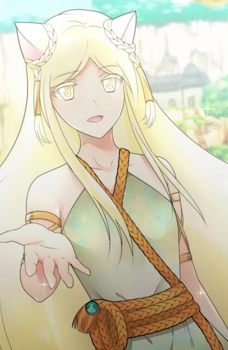

How to Fool a Liar King Remastered
Sequencia de How to take off your Mask Regina, nossa heroína, aparece magicamente em Eroolia. Ela não tem ideia de como foi parar em Eroolia, e aqui, ela conhece Juli e seus companheiros, a quem ela acaba se juntando em sua jornada para Laarz, um país de felinos. Será que ela vai conseguir voltar para casa? A presença de Regina em Eroolia é um acidente ou há um propósito por trás disso? Ela pode confiar em Juli, que parece estar cheio de segredos? Eroolia e Laarz são os dois países localizados dentro da ilha de Eroolia, que é conhecida como a ilha isolada e amaldiçoada para o mundo exterior. Os dois países têm relações terríveis, pois Eroolia, que é principalmente ocupada por humanos, não consegue se dar bem com Laarz, que é conhecido como o país dos luccretias, o povo dos gatos. Ozzwa, o país de onde Regina é, fica nos arredores da ilha de Eroolia e é conhecido por suas artes marciais.
⬇ Download